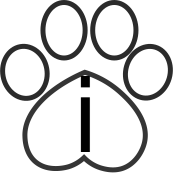
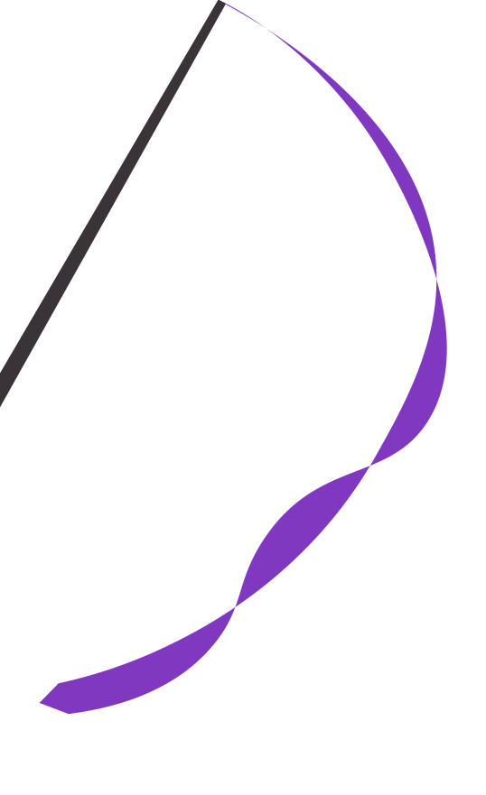

Gatos Anônimos Floripa
"Era um gatinho igual a cem mil outros. Mas eu fiz dele um amigo. Ele é agora único no mundo."
Quero adotar
Quer saber se você está pronto para arranjar um amigo felino?
Moro em ambiente onde o bichano ficará protegido.
-  Gatos com acesso a rua são expostos a riscos como atropelamentos, envenenamentos, doenças graves etc.
- Damos preferência para adotantes que moram ambientes telados ou onde o gatinho não terá acesso a rua.
Tenho condições financeiras para pagar a castração, comprar ração de qualidade, vacinas etc.
- Castração é um ato de amor! Apenas doamos gatos castrados.
- Mesmo gatos sem acesso a rua precisam de imunização contra doenças que podem ser transmitidas por roedores, por exemplo. Por isso, a vacina é essencial.
Todos os membros da minha casa estão de acordo com a adoção.
Gatos levam um tempo para se adaptar a um novo ambiente, podendo miar, se esconder e até passar mal durante esse período. É importante que todos os membros da sua casa tenham ciência disso e que aceitem manter o ambiente seguro.
Tenho ciência de que sou responsável pela vida de um bichano.
A expectativa de vida do gato é de 16 anos, podendo chegar a duas décadas. Você deve estar ciente de que precisa ser responsável pelo bichano durante toda a vida dele.
Parabéns! Você passou pela primeira fase da entrevista!
Próximos passos:
Para adotar um bichano, entre em contato via inbox na nossa página no Facebook ou Instagram.
Daremos continuidade à entrevista e, estando tudo certo, faremos de tudo para encontrar o seu novo melhor amigo :)
Talvez, agora não seja o momento de ter um amigo felino.
Nossos parceiros
Avise que foi indicado pelos Gatos Anônimos e ajude o projeto:
Quer se tornar um parceiro? Entre em contato através do nosso formulário!
Novidades
Siga o projeto pelas redes sociais
